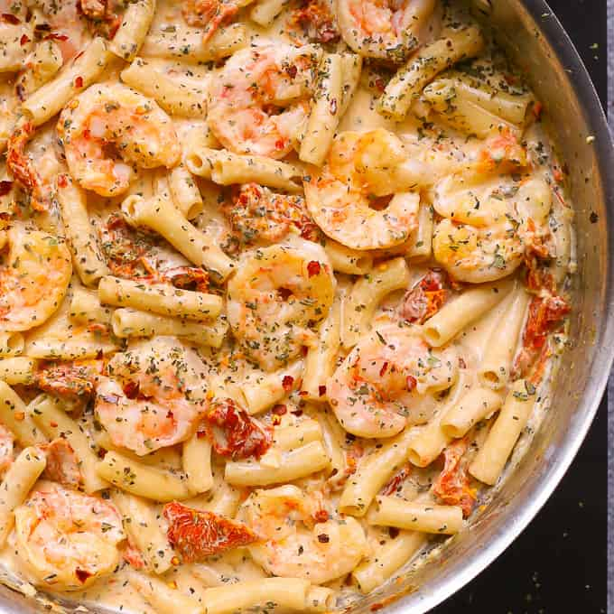

Creamy Mozzarella Shrimp Pasta
Ingredients
Pasta:
- 8 oz penne pasta (for gluten free version, use gluten free brown rice pasta)
Shrimp:
- 2 tablespoons olive oil (drained from sun-dried tomatoes jar or just use regular olive oil)
- 1 pound shrimp (without shells, and deveined)
- 3 garlic cloves minced
- 1/4 teaspoon salt
Creamy Sauce:
- 4 oz sun-dried tomatoes (without oil)
- 4 garlic cloves minced
- 1 cup half and half
- 1 cup mozzarella cheese shredded (do not use fresh Mozzarella, use pre-shredded Mozzarella)
- 1 tablespoon dried basil (if using fresh basil you can add more)
- 1/4 teaspoon red pepper flakes crushed, add more to taste
- 1/8 teaspoon paprika
- 1/2 cup reserved cooked pasta water (or more)
- 1/4 teaspoon salt
Directions
How to Cook Pasta:
1. Cook pasta according to package instructions. Reserve some cooked pasta water. Drain the pasta.
How to Cook Shrimp:
- Note:
1. if using sun-dried tomatoes in oil (in a jar), make sure to drain sun-dried tomatoes from oil, before using them. Reserve 2 tablespoons of this drained oil for sauteing the shrimp as described below:
2. Heat 2 tablespoons olive oil (reserved from the sun-dried tomatoes jar - see the note above, or use regular olive oil) in a large skillet on medium-high heat.
3. Add shrimp with minced garlic. Cook the shrimp on one side for about 1 minute, until shrimp turns pink or golden brown on that side. While it cooks, sprinkle salt over the shrimp to cover every single shrimp.
4. Make sure not to crowd the shrimp in the skillet, otherwise, moisture will form and shrimp won't sear right.
5. After 1 minute, flip the shrimp over to the other side and cook for about 30 seconds or 1 minute more.
6. The shrimp should be golden color or pink on both sides and not overcooked.
7. Remove the shrimp to a plate, being careful to leave all the oil in the skillet.
How to Make Creamy Mozzarella Sauce:
1. To the same skillet, add sun-dried tomatoes (drained from oil and sliced into smaller chunks, if needed) and more minced garlic.
2. Saute sun-dried tomatoes in olive oil (remaining from shrimp) on medium heat, stirring, for 1 minute until the garlic is fragrant. The skillet should be hot.
3. Add half and half to the hot skillet with sun-dried tomatoes and bring to boil.
4. Add shredded cheese to the skillet, and quickly stir in while boiling. Immediately reduce to simmer.
5. Continue cooking the sauce on low simmer heat, constantly stirring, until all the cheese melts and the creamy sauce forms.
6. If the sauce is too thick, add a small amount of half-and-half or reserved cooked pasta water.
7. Add basil, crushed red pepper flakes, paprika. Stir.
8. Add 1/4 teaspoon of salt gradually, stirring on low heat and tasting (you might need slightly less than 1/4 teaspoon).
How to Assemble Shrimp Pasta:
1. Add cooked pasta to the sauce, and reheat gently on medium heat.
2. Add the cooked shrimp, stir it in.
3. Taste, and season with more salt, if needed.
4. If the sauce is too thick, add a small amount of half-and-half or reserved cooked pasta water.
5. Let everything simmer on low heat for a couple of minutes for flavors to combine.
- Note:
6. Make sure to salt the dish just enough to bring out of the flavors of basil and sun-dried tomatoes.
View the original recipe online
Contact Me:
Send me an email!
University of Montana
32 Campus Drive
Missoula, MT 59812